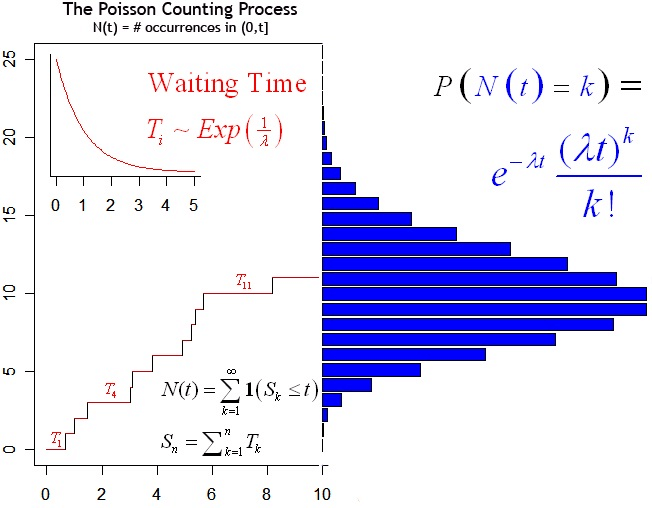
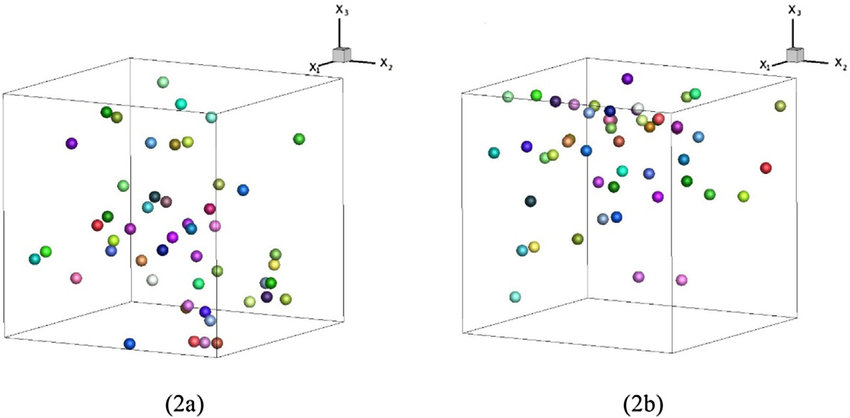

A Poisson point process is a type of random mathematical object that consists of points randomly located on a mathematical space[1]. It’s often used as a mathematical model for seemingly random processes in numerous disciplines such as astronomy, biology, ecology, geology, physics, economics, image processing, and telecommunications[1].

In the context of our exercise, the attacks on the servers can be thought of as a Poisson point process. Each attack is a “point”, and these points (attacks) are randomly located in time over the interval T. The key property of a Poisson point process is that the points occur independently of one another[1], which is similar to the assumption in our exercise that attacks occur independently with probability λ in each interval.
The Poisson point process has interesting mathematical properties[2], one of which is that the number of points (in this case, attacks) in a region of finite size (the time period T) is a random variable with a Poisson distribution[1]. This aligns with the observation that as N becomes large, the distribution of the number of attacks should approach a Poisson distribution.

To verify whether our simulated distributions come close to the theoretical asymptotic distribution, we could compare the mean and variance of your simulated distributions to the theoretical mean and variance of the Poisson distribution. For a Poisson distribution, the mean and variance are both equal to the rate parameter (in this case, λT).
If the mean and variance of our simulated distributions are close to λT, this would suggest that they are indeed approximating a Poisson distribution.
Source
[1]. https://en.wikipedia.org/wiki/Poisson_point_process
[2]. https://hpaulkeeler.com/wp-content/uploads/2018/08/PoissonPointProcess.pdf